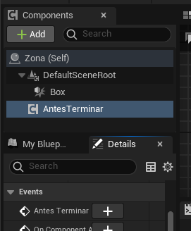
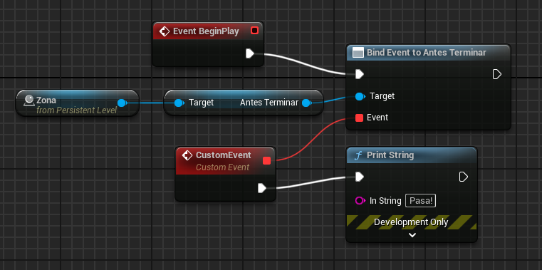
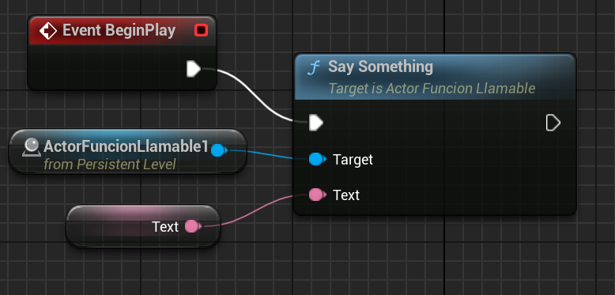
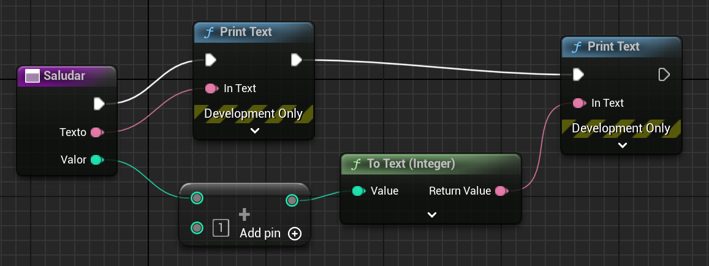
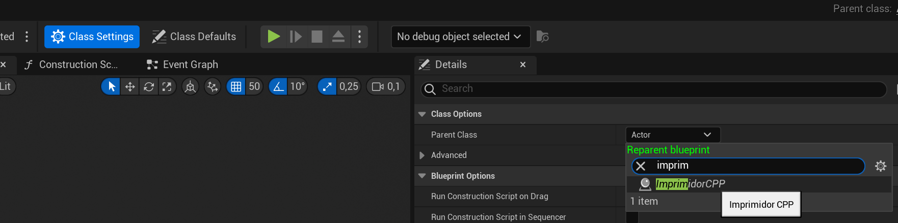

En C++ es más sencillo (y en ocasiones más eficiente) hacer ciertos comportamientos (como cálculos matemáticos complejos)
Sin embargo, hay algunos comportamientos que se programan muy fácilmente de modo gráfico
Vamos a crear un actor+componente que sea un trigger y se active justo delante de la celda, sólo si tenemos los puntos suficientes
El Actor puede ser en Blueprints o en C++
Cuando solape con ese actor, lanzará un evento
Ahora, en el componente, añadimos (por encima de UCLASS(ClassGroup…))=) el siguiente código:
DECLARE_DYNAMIC_MULTICAST_DELEGATE()
Un delegate es una estructura que encapsula una llamada a función
Se usan para conectar blueprints con C++
DECLARE_DYNAMIC_MULTICAST_DELEGATE es necesario si queremos que haya una propiedad del componente que podamos asignar en un Blueprint
DYNAMIC: puede ser serializadoMULTICAST: de uno a muchosDELEGATE: algo externo va a manejar la operaciónAhora creamos el código:
// hay muchas macros en las que ';' es opcional
DECLARE_DYNAMIC_MULTICAST_DELEGATE(FAntesTerminar);
(Recordemos que F al principio de la clase se usa por convenio en Unreal)
Esto crea una clase propia para la señal en el editor de Blueprints
Después, en los atributos privados, creemos un UPROPERTY con el param de esa clase que hemos referenciado en DECLARE_DYNAMIC_MULTICAST_DELEGATE
Esta propiedad tiene que ser BlueprintAssignable: UPROPERTY(BlueprintAssignable) para que se vea en el editor:
UPROPERTY(BlueprintAssignable)
FAntesTerminar AntesTerminar;
Bien, ahora hemos creado un evento
Para ello, cuando detectemos solape con la gema, vamos a hacer Broadcast sobre el evento:
AntesTerminar.Broadcast();
Si hemos hecho el actor en C++ tenemos que añadir el componente al actor de nuestro trigger con CreateDefaultSubobject
Si está en Blueprint, directamente en el editor
Añadimos también, en el Actor, un Box de colisión para establecer el volumen
Si el Actor está en C++, el componente tendrá que ser BlueprintReadWrite porque queremos acceder a él desde el editor de blueprints:
public:
UPROPERTY(EditAnywhere, BlueprintReadWrite)
UComponenteAntesTerminar * _antesTerminar;
Ahora vamos al Blueprint del actor que contiene el componente y en los eventos añadimos el nuevo evento que ha aparecido:

Figura 1: Aparecerá un botón nuevo en los eventos, pinchando en el componente

Figura 2: Y este evento lo podemos usar en el blueprint como queramos
Hasta ahora nos hemos centrado en usar C++ como una alternativa a blueprints, pero realmente se complementan muy bien
Vamos a ver cómo llamar a funciones C++ desde blueprints, y a funciones blueprint desde C++
En el .h de un Actor nuevo, añadimos el prototipo de una función sencilla:
UFUNCTION(BlueprintCallable)
void SaySomething(const FText & text);
Que implementamos así:
void AActorFuncionLlamable::SaySomething(const FText &text)
{
FString str = text.ToString();
UE_LOG(LogTemp, Warning, TEXT("%s"), *str)
}
Las UFUNCTION usan los parámetros como entrada, a no ser que sean como referencia no constante, caso en el cual los usan como salida:
UFUNCTION(BlueprintCallable)
int32 fun(int32 & output);
Para hacer que esos parámetros no sean de salida, usamos la macro UPARAM, con el argumento ref
UFUNCTION(BlueprintCallable)
int32 fun(
UPARAM(ref) int32 & output
);
También podemos cambiar la etiqueta de la variable:
UFUNCTION(BlueprintCallable)
int32 fun(
UPARAM(DisplayName="Total weight") int32 & output
);
Para alimentar la función, podemos construir el siguiente esquema en el blueprint del nivel:

Figura 3: Blueprint para establecer variable
Podemos establecer diferentes tipos de UFUNCTION, de forma que si queremos una función constante/pura (sin "pestañas" de orden de ejecución en los blueprints, porque no tiene side-effects):
UFUNCTION(BlueprintCallable)
float CalculoSinEfectos() const;
UObject tiene el método CallFunctionByNameWithArguments
Con este método podemos acceder a una función en blueprints
Vamos a crear un componente blueprint en el editor (es decir, que no sea C++)
En él, creamos una función que imprima un texto por pantalla

Figura 4: Función con un parámetro Text que imprime la entrada
Ahora creamos un Actor en C++, y en algún sitio (Tick, BeginPlay):
#include "Misc/OutputDeviceNull.h"
// UImprimidorPadreCPP no existe aún
auto f = FindComponentByClass<UImprimidorPadreCPP>();
if (nullptr != f)
{
// puede ser este null ahora
FOutputDeviceNull n;
f->CallFunctionByNameWithArguments(
TEXT("Saludar \"hola a todos\""),
n, // dispositivo de salida
nullptr, // ejecutor (null vale)
true); // forzar llamada (T vale)
}
En efecto, no compila
Lo que ocurre es que necesitamos que la clase a la que estamos haciendo referencia exista en C++
Vamos a crear una nueva clase en C++ que sea padre de la clase que queremos, para así poder importarla (#include)
Creamos una clase Actor de C++
Nos aseguramos de que su UCLASS sea Blueprintable
UCLASS( Blueprintable, ...)
Asegurémonos de que todo compila correctamente
Ahora volvemos a nuestra clase blueprint original, y cambiamos el padre:

Figura 5: Cambiar el padre de una clase
Ahora ya podemos incluir la clase padre en nuestro ActorQueLlamaBP
#include "ImprimidorPadreCPP.h"
Y probamos:
#include "Misc/OutputDeviceNull.h"
// Si el BP se llama 'UImprimidorPadreCPP', y la función "Saludar"
auto f = FindComponentByClass<UImprimidorPadreCPP>();
if (nullptr != f) // comprobad siempre
{
FOutputDeviceNull n;
FString param = "\"hola a todos!\" 6";
FString cmd =
FString::Printf(
TEXT("Saludar %s"),
*param);
// Debe imprimir "hola a todos!" y "7" en pantalla
f->CallFunctionByNameWithArguments(
*cmd, n, nullptr, true);
}
Figura 6: Ejemplo de salida llamado a una función blueprint desde C++
BlueprintImplementableEventUFUNCTION(BlueprintImplementableEvent)
void EventoBP();
BlueprintNativeEventUFUNCTION(BlueprintNativeEvent)
void EventoBP();
// ...
void AMiActor::EventoBP_Implementation()
{
// ...
}
Se puede llegar muy lejos con blueprints
Pero hay algunas cosas que necesitan C++
Para código existente (en C++ u otros lenguajes), hay que usar C++
Los blueprints son archivos binarios, es difícil ponerlos en control de versiones y trabajar por partes en paralelo
Los blueprints están pensado para lógica de juego, no para algoritmos complejos y genéricos
Muchas veces, el código C++ será más fácil de mantener que un script visual de blueprints muy complejo
Los blueprints son más lentos que C++
La eficiencia no está sólo en la ejecución, sino también en la velocidad a la que se crea el juego
Con blueprints, en general, se llega antes a un prototipo jugable
No hay que despreciar el tiempo de ciclo de prueba-compilación en C++
Es alto, por el tipo de construcción de UE, pero ha mejorado mucho en cada versión
.h a menudoprint, sino con un billboard) indicando qué hay que hacer